강단노트는 설교를 준비하는 책상에서, 그리고 말씀을 전하는 강단에서 함께하는 아이패드 원고 리더예요. 이 설명서도 원고처럼 열려 있으니, 읽으면서 애플펜슬로 마음껏 써 보세요. 틀려도 괜찮아요 — 지우개와 되돌리기가 있으니까요.
처음 5분, 이렇게 따라 해 보세요
서재 오른쪽 위 원고 불러오기를 누르고 설교 원고 PDF를 골라요.
원고가 열리면 애플펜슬로 밑줄 · 형광펜 · 동그라미를 그어 표시해요.
오른쪽 위 강단을 누르면 설교할 때 쓰는 화면이 돼요.
위쪽 타이머 설정 버튼(25분)에서 설교 시간을 정하고, 시간을 탭해 시작해요.
화면 오른쪽을 탭하며 한 화면씩 넘겨 설교해요. 왼쪽을 탭하면 이전 화면이에요.
차례
1원고 불러오기7강단에서 설교하기2원고 화면 한눈에 보기8설교 타이머 · 스톱워치자세히3애플펜슬로 준비하기9원고 정리와 백업4필기 옮기기 · 크기 · 회전10자주 묻는 질문5쪽 미리보기자세히11연습해 보기6읽기 편하게 — 확대 · 화면 색
원고는 이 아이패드 안에만 — 강단노트에는 회원 가입도, 로그인도 없어요. 원고와 필기는 이 기기 안에만 저장되고 어떤 서버로도 보내지 않아요. 인터넷이 없는 예배당에서도 그대로 동작해요.
1원고 불러오기
강단노트는 PDF 원고를 열어요. PDF에는 원고를 쓸 때 고른 글꼴이 그대로 담겨서, 어느 기기에서 열어도 쓰신 모양 그대로 보여요.
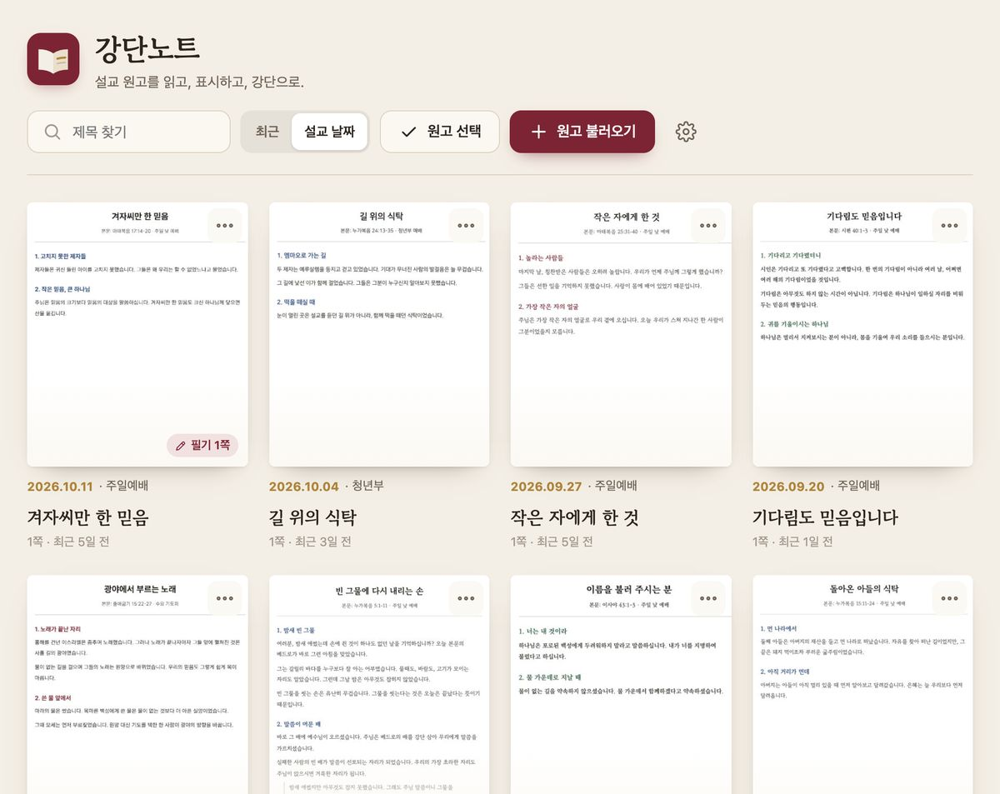
서재 — 불러온 원고가 카드로 모여 있어요
1정렬 — 최근 연 순 · 설교 날짜 순.
2원고 선택 — 여러 원고를 골라 한 번에 지워요(9장).
3원고 불러오기 — 파일 앱에서 PDF를 골라요. 여러 개도 한 번에.
4설정 — 설명서 · 백업 · 문의.
5더 보기 — 제목 바꾸기 · 지우기.
6필기 N쪽 — 필기가 있는 쪽 수예요.
원고를 넣는 세 가지 방법
서재에서 — 원고 불러오기 → 파일 앱이 열리면 iCloud Drive · 구글 드라이브 · 나의 iPad에서 PDF를 골라요.
다른 앱에서 보내기 — 파일 앱 · 메일 · 카카오톡에서 PDF를 열고 공유 → 강단노트를 누르면 바로 들어와요.
구글 드라이브 앱에서 — 원고 옆 점 세 개(더 보기) → 다음에서 열기(또는 사본 보내기) → 강단노트.
파일 이름 붙이는 요령 — ‘260921 주일예배 설교 - 제목’처럼 지으면 날짜 · 예배 · 제목이 알아서 나뉘어 정리돼요. 날짜 순 정렬과 ‘지난 설교’ 고르기도 이 날짜를 써요. 원고를 PDF로 만드는 법 — 한글: 파일 → PDF로 저장하기 · 워드: 다른 이름으로 저장 → PDF · Pages: 내보내기 → PDF · 구글 문서: 다운로드 → PDF 문서
2원고 화면 한눈에 보기
원고를 열면 준비 화면이에요. 위쪽에는 한 줄 막대, 아래쪽에는 필기 도구 막대가 있어요.
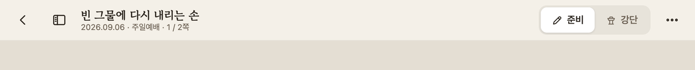
1서재로 — 원고 목록으로 돌아가요. 필기는 쓰는 즉시 저장돼 있어요.
2쪽 미리보기 — 왼쪽에 쪽 목록을 열고 닫아요(5장에서 자세히).
3제목과 쪽 — 지금 보는 쪽이 표시돼요.
4준비 · 강단 — 두 화면을 오가요. 어느 화면에서든 늘 같은 자리에 있어요.
5메뉴 — 화면 색 · 확대 · 여백 · 내보내기(6장).
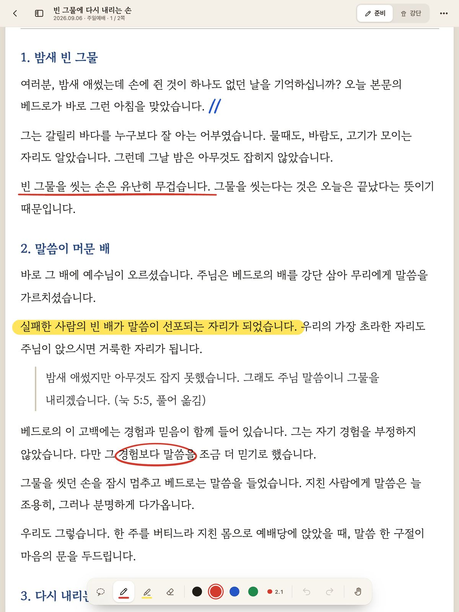
준비 화면 — 밑줄 · 형광펜 · 동그라미 · 쉼 표시
펜슬은 쓰고, 손가락은 넘겨요
준비 화면에서 애플펜슬은 글씨를 쓰고, 손가락은 원고를 위아래로 넘겨요. 그래서 쓰는 동안 손바닥이 화면에 닿아도 괜찮아요.
필기는 원고에 딱 붙어 있어요. 확대하거나 아이패드를 가로로 돌려도 제자리에 그대로 있어요.
저장은 따로 안 해도 돼요
한 획을 그을 때마다 이 아이패드에 바로 저장돼요. 앱을 닫았다 열어도 그대로예요.
3애플펜슬로 준비하기
아래쪽 도구 막대에서 도구를 고르고 펜슬로 써요.
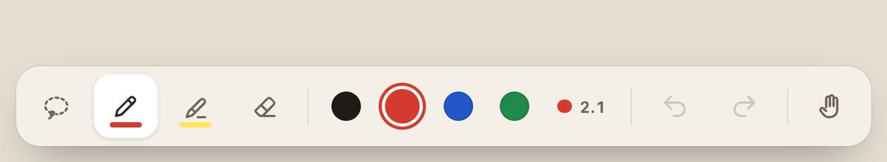
1선택(올가미) — 필기를 골라 옮겨요(4장).
2펜 — 누르는 힘에 따라 굵기가 살짝 달라져요.
3형광펜 — 아래 글씨를 가리지 않아요.
4지우개 — 부분 · 획 전체 두 가지.
5색 — 고른 도구의 색이에요.
6굵기 — 숫자는 pt(포인트).
7되돌리기 — 방금 한 일을 취소해요.
8다시하기 — 취소한 것을 되살려요.
9손가락 쓰기 — 펜슬이 없을 때.
굵기 바꾸기
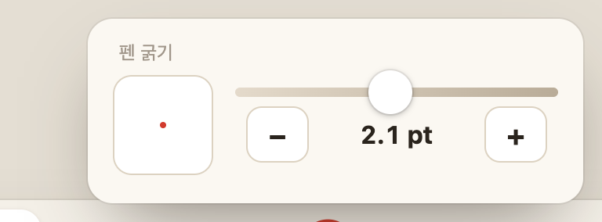
굵기 버튼을 누르면 작은 창이 열려요.
1지금 화면에서의 실제 크기 미리보기
2슬라이더를 밀어 굵기를 정해요
3−/+ 로 조금씩, 숫자는 pt
지우개 두 가지
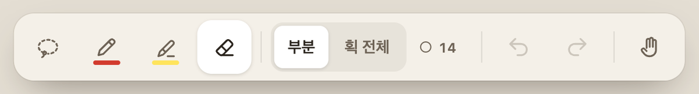
지우개를 고르면 막대에 ‘부분 · 획 전체’가 나와요
부분 — 연필 지우개처럼 지나간 자리만 지워요. 밑줄의 가운데만 지울 때 좋아요.
획 전체 — 닿은 획을 한 번에 통째로 지워요.
알아 두면 좋아요 — 형광펜을 대충 곧게 그어도 반듯한 줄로 정리돼요(글줄과 나란하면 수평으로). 펜슬이 없다면 손가락 쓰기를 켜세요. 이때 원고 넘기기는 두 손가락으로 해요.
4필기 옮기기 · 크기 · 회전
잘못된 자리에 쓴 필기, 너무 크거나 작게 쓴 필기도 다시 쓸 필요 없어요. 골라서 옮기고, 키우고, 돌리면 돼요.
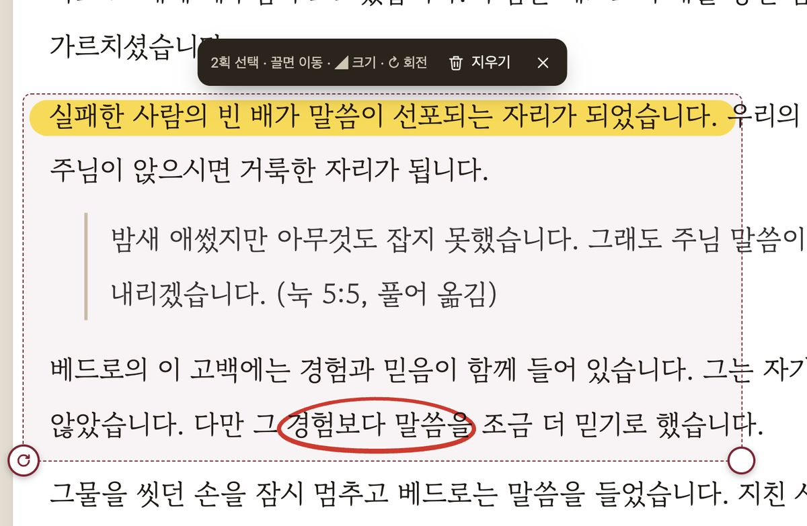
동그라미와 형광펜을 함께 고른 모습
1선택 막대 — 고른 획 수 · 지우기 · 선택 해제(X)
2크기 손잡이(오른쪽 아래) — 끌면 커지고 작아져요. 선 굵기도 함께 바뀌어요.
3회전 손잡이(왼쪽 아래 ↻) — 돌리면 가운데를 축으로 돌아가요.
따라 해 보기
도구 막대 맨 왼쪽 선택(올가미)을 눌러요.
옮기고 싶은 필기를 펜슬로 빙 둘러싸요. 한 획만 고를 때는 그 획을 톡 누르면 돼요.
옮기기 — 점선 상자 안을 펜슬이나 손가락으로 끌어요.
크기 — 오른쪽 아래 동그란 손잡이를 바깥으로 끌면 커지고, 안으로 끌면 작아져요.
회전 — 왼쪽 아래 ↻ 손잡이를 잡고 돌려요. 돌리는 동안 각도가 보이고, 0° · 90° · 180°에서 살짝 달라붙어 반듯하게 맞추기 쉬워요.
다 됐으면 빈 곳을 펜슬로 톡 누르거나 막대의 X를 눌러 선택을 풀어요.
잘못 옮겼다면 — 도구 막대의 되돌리기를 누르면 옮기기 · 크기 · 회전 전으로 한 번에 돌아가요.
5쪽 미리보기
원고가 여러 쪽일 때, 왼쪽에 쪽 목록을 펼쳐 두면 전체를 한눈에 보고 원하는 쪽으로 바로 갈 수 있어요. 필기도 작게 함께 보여서 “동그라미 친 그 대목이 몇 쪽이었더라?” 할 때 편해요.
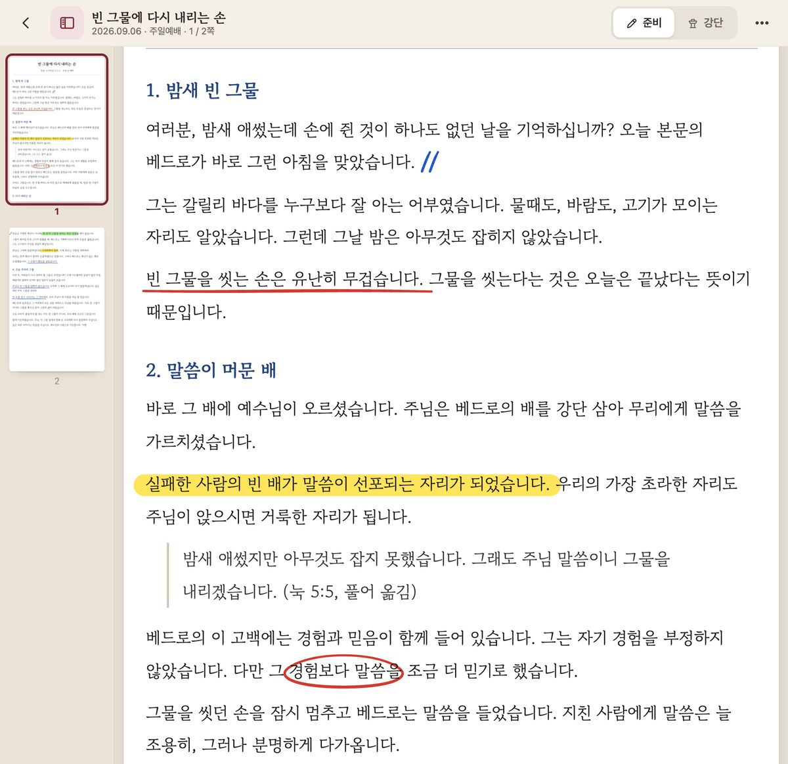
쪽 미리보기를 연 모습 — 원고는 오른쪽으로 비켜서 그대로 읽을 수 있어요
1목록 버튼 — 누르면 열리고, 한 번 더 누르면 닫혀요. 열려 있을 때는 버튼 색이 진해져요.
2지금 보는 쪽 — 테두리로 표시돼요. 원고를 넘기면 따라 움직여요.
3다른 쪽 — 누르면 그 쪽으로 바로 가요. 아래 숫자가 쪽 번호예요.
여는 방법 세 가지
준비 화면 — 위쪽 막대 왼쪽의 목록 버튼(서재로 버튼 바로 옆)을 눌러요.
강단 화면 — 위쪽 왼쪽의 쪽 번호(예: 1 / 2)를 눌러요. 설교 중에 광고나 찬양 뒤 원하는 쪽으로 바로 돌아갈 때 좋아요.
어느 화면이든 — 메뉴(⋯) → 쪽 미리보기 스위치를 켜요.
닫는 방법
연 버튼을 한 번 더 누르면 닫혀요. 목록이 닫히면 원고가 다시 화면 가득 넓어져요.
한 번 열어 두면 기억해요 — 쪽 미리보기를 켜 두면 다음에 원고를 열 때도 열려 있어요. 글씨를 크게 보고 싶을 때는 닫아 두세요.
6읽기 편하게 — 확대 · 화면 색
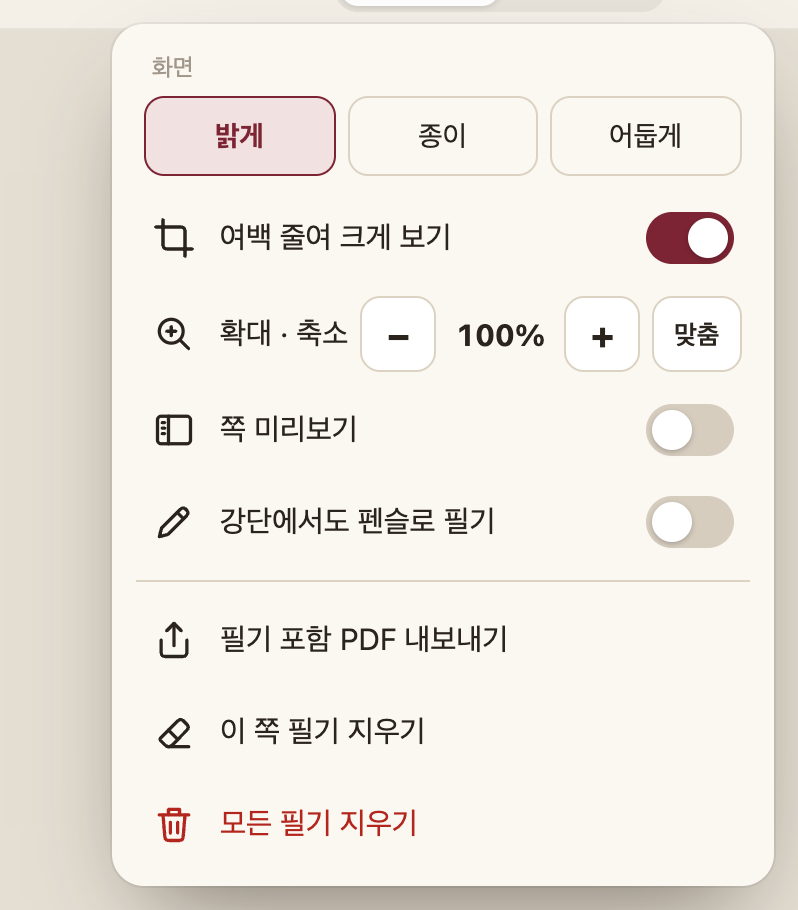
오른쪽 위 메뉴(⋯)
1화면 색 — 밝게 · 종이 · 어둡게. 준비와 강단에 따로 기억돼요.
2확대 · 축소 — −/+ 와 ‘맞춤’(쪽 폭에 맞게 = 100%).
3여백 줄여 크게 보기 — 원고 바깥 여백을 잘라 글씨가 약 1.3배 커져요.
4쪽 미리보기 — 5장을 보세요.
5강단에서도 펜슬로 필기 — 7장을 보세요.
6필기 포함 PDF 내보내기 — 필기가 들어간 PDF를 파일 앱 · 메일 · 드라이브로 보내요.
손가락으로 확대 · 축소
두 손가락을 화면에 대고 벌리면 커지고, 오므리면 작아져요(60~250%).
100%보다 크게 보면 원고를 옆으로도 움직일 수 있어요.
원래대로 돌아오려면 메뉴 → 확대 · 축소의 맞춤을 눌러요.
더 크게 보고 싶다면 — 아이패드를 가로로 돌려 보세요. 원고가 화면 폭에 맞춰지니 글씨가 훨씬 커져요. 강단에서 거리가 멀다면 가로 화면 + 여백 줄이기를 함께 쓰면 좋아요.
7강단에서 설교하기
오른쪽 위 강단을 누르면 설교할 때 쓰는 화면이 돼요. 위쪽 막대가 강단용으로 바뀌어요.
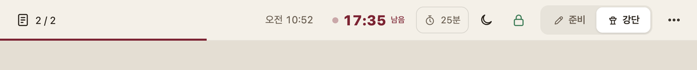
1쪽 번호 — 누르면 쪽 미리보기
2지금 시각
3타이머 — 탭하면 시작 · 멈춤
4타이머 설정 — 시간 · 방식(8장)
5화면 색 — 밝게 · 종이 · 어둡게
6화면 꺼짐 방지 — 초록이면 켜짐
7준비 · 강단
8메뉴
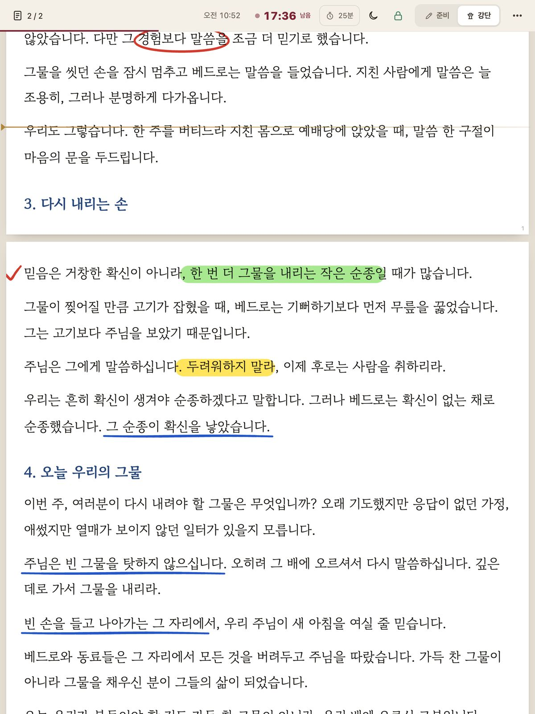
이전다음 화면
탭하는 자리 — 왼쪽 30%는 이전, 나머지는 다음
넘기기
화면 오른쪽을 탭하면 다음 화면, 왼쪽을 탭하면 이전 화면이에요.
펜슬로 탭해도 넘어가요.
블루투스 페이지 넘김 페달도 쓸 수 있어요.
이어 읽을 자리
한 화면을 통째로 넘기지 않고 앞 화면의 마지막 몇 줄을 남겨 둬요. 그리고 이어 읽을 자리에 금색 줄이 잠깐 나타나서, 눈이 어디로 가야 할지 바로 알 수 있어요.
강단에서는 필기가 꺼져 있어요
설교 중 실수로 그어지지 않도록 강단에서는 펜슬로 탭해도 넘기기만 돼요. 강단에서도 쓰고 싶다면 메뉴의 강단에서도 펜슬로 필기를 켜세요.